10.2. FreeRTOS Real-time Object View (ROV)¶
- Introduction
- Features Supported
- CCS Setup for Enabling FreeRTOS ROV
- Using ROV with PDK examples/applications
- Important Usage Guidelines
10.2.1. Introduction¶
Real-time Object View (ROV) in CCS IDE allows user to view the state of a executing application via different easy to understand views. These views are generated by reading information from the running SW program using the JTAG debugger port.
- This section explains,
- Using ROV with PDK examples/applications
- Other important usage guidelines
10.2.2. Features Supported¶
- Some of the supported ROV views are listed below
- View task state, including free stack size
- View semaphore, mutex state, including which task is blocked on a semaphore and which task is holding onto a mutex
- View system heap and common stack information like ISR stack
10.2.3. CCS Setup for Enabling FreeRTOS ROV¶
Note
- PDK examples/application build generates syscfg_c.rov.xs to the same directory where the executables are generated.
- The ROV views are generated using the backend file {PDK_INSTALL_PATH}/packages/ti/kernel/freertos/rov/FreeRTOS.rov.js which is referenced by syscfg_c.rov.xs.
- Hence CCS needs to know the location of the {PDK_INSTALL_PATH}.
10.2.3.1. Set XDCPATH as {PDK_INSTALL_PATH}¶
User needs to set the CCS XDCPATH (XDCpath Package Repositories) as {PDK_INSTALL_PATH} to enable ROV. Follow the steps below to do this.
Note
This setting needs to be done only once per CCS installation for a given PDK release.
Click on CCS Menu > Window > Preferences as shown below
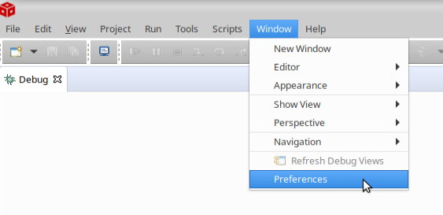Fig. 10.1 Open Preferences
You will see a ‘Preferences’ window in CCS as shown below, expand Code Composer Studio > Products and click on RTSC
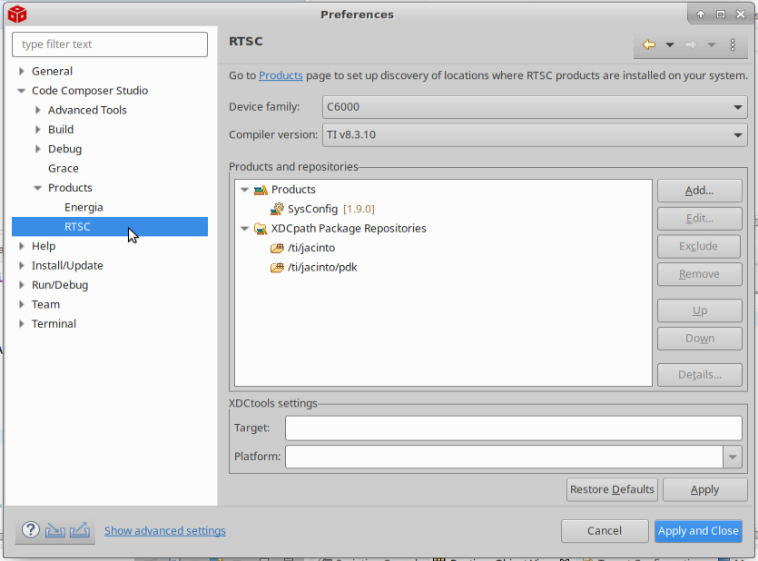Fig. 10.2 CCS Preferences Window for RTSC
Now click on Add under Products and Repositories You will see a ‘Select a Product or Repository’ window as shown below.
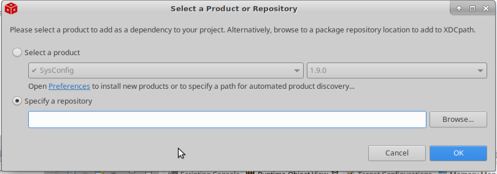Fig. 10.3 Select a Product or Repository
Select Specify a repository and browse to {PDK_INSTALL_PATH}
Click OK in ‘Select a Product or Repository’ window
Now make sure {PDK_INSTALL_PATH} is listed under XDCpath Package Repositories under ‘Preferences > RTSC’ window.
Click on Apply and Close in ‘Preferences’ window
{kind=link}
{kind=link}
{kind=link}
10.2.4. Using ROV with PDK examples/applications¶
Make sure you are able to load and run PDK examples/applications as usual via CCS.
Halt the program as shown below. This is important, since otherwise the JTAG debugger cannot read memory for the running CPU to get the state information that ROV needs.
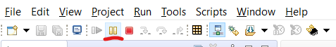Fig. 10.4 Halt the CPU
To launch ROV views, click on CCS Menu > Tools > Runtime Object View as shown below
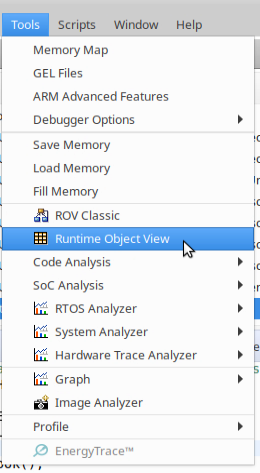Fig. 10.5 Start ROV from CCS Menu
Alternatively, you can click on the “ROV” button in the CCS toolbar as shown below
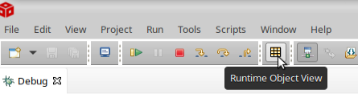Fig. 10.6 Start ROV from CCS Toolbar
You will see a ROV window in CCS as shown below, click on “CONNECT”
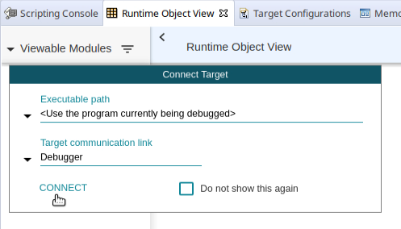Fig. 10.7 ROV Window
This will launch the ROV viewer as shown below
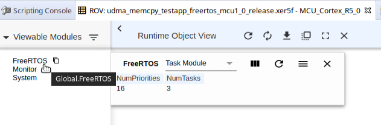Fig. 10.8 ROV after its started
You can click on various Viewable Modules. Currently, “FreeRTOS” is the one which has useful views
After clicking on “FreeRTOS”, click on the drop down to see all the supported ROV views
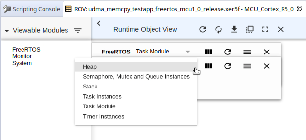Fig. 10.9 ROV views
Show below is a sample after “Task Instances” view is selected
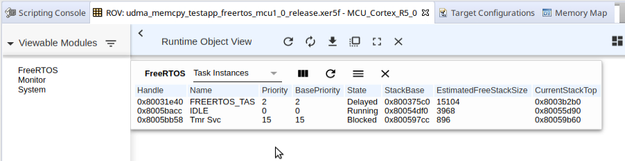Fig. 10.10 ROV task view
You can click on the copy button shown below to launch a new view keeping the previous view still visible
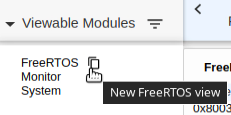Fig. 10.11 ROV new view
Shown below is sample with many views shown in ROV
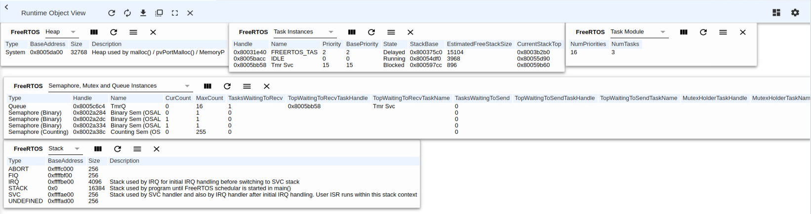Fig. 10.12 ROV multiple active views
You can run the halted program after you seen the state you want to see. After running for some time, to see updated state, simply halt the CPU again, the ROV window will show the updated state.
{kind=link}
{kind=link}
{kind=link}
{kind=link}
{kind=link}
{kind=link}
{kind=link}
{kind=link}
{kind=link}
10.2.5. Important Usage Guidelines¶
You need to be connected via JTAG for ROV to read and display information from the loaded program.
The program needs to be in a halted state, else the JTAG debugger cannot read the SOC memory which it needs to update its views.
When you reload and run the program again OR you load and run a new program, you need to close current ROV window and launch ROV again.
Many of the FreeRTOS ROV views rely on certain FreeRTOS config to be enabled in order to show the information correctly. So if you are changing any of the below FreeRTOS config, the ROV views many NOT show all information correctly.
- configQUEUE_REGISTRY_SIZE controls the maximum semaphores, queues, mutex’s that can be viewed by ROV.
If your semaphore, queue, mutex’s count is more than this value then the additional objects wont be seen. In this case go and increase this value in the FreeRTOSConfig.h ({PDK_INSTALL_PATH}/packages/ti/kernel/freertos/config/{soc}/{cpu}/FreeRTOSConfig.h). Note, this only affect the objects seen in ROV view and has no effect on functionality of the created object in the program.
- configUSE_TRACE_FACILITY MUST be 1 for ROV to show estimated free stack size for tasks.
This option writes a known pattern to the task stack and ROV then checks the point at which the pattern is overwritten to find the stack used so far by the task. If you disable configUSE_TRACE_FACILITY, the free stack size may show “STACK OVERFLOW”, but you can ignore this since it is not able to find a known pattern at the top of stack and concludes its a stack overflow. The other task information displayed will still be correct.
To make a semaphore, mutex or queue visible in ROV, you need to register the object using the below function else this object wont be visible in ROV
vQueueAddToRegistry(gMySemHandle, "My object name");
When using OSAL SemaphoreP APIs, internally it calls vQueueAddToRegistry to register semaphore’s and mutex’s with a default name.
The free stack size shown for a task in ROV views, is a estimated value, and it should be used with care as listed below,
- To reduce the time needed to read the stack memory for a known pattern and compute the free stack size, the ROV logic reads 4 bytes every 128 bytes, this allows the stack free space computation to be fast but with a accuracy loss of 128 bytes at most.
- In some cases, if the stack truly has the pattern to be checked for ( 0xa5a5a5a5 ), then ROV views may wrongly compute that 128 bytes stack chunk as “free” when really it is not free.
If you have tasks with very large stacks or lot of tasks, then when task view is opened in ROV it may take a some time to compute the task stack size. In worst case, it may also timeout.